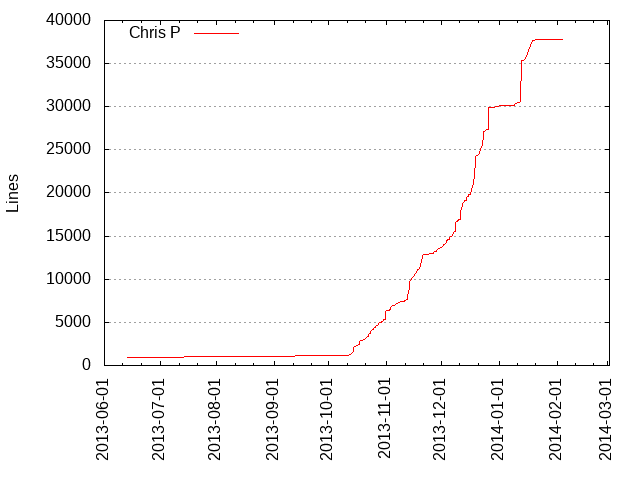
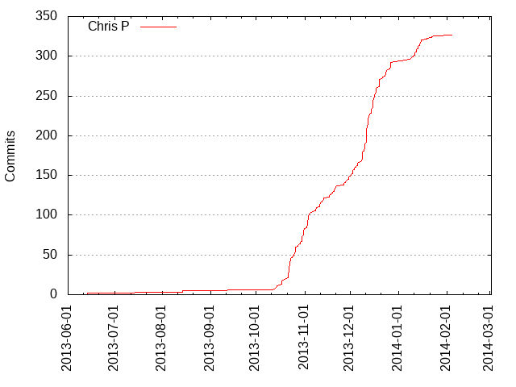

Authors
| Author | Commits (%) | + lines | - lines | First commit | Last commit | Age | Active days | # by commits |
|---|
| Chris P | 327 (100.00%) | 37810 | 16430 | 2013-06-13 | 2014-02-04 | 235 days, 23:09:15 | 83 | 1 |


| Month | Author | Commits (%) | Next top 5 | Number of authors |
|---|
| 2014-02 | Chris P | 1 (100.00% of 1) | | 1 |
| 2014-01 | Chris P | 33 (100.00% of 33) | | 1 |
| 2013-12 | Chris P | 145 (100.00% of 145) | | 1 |
| 2013-11 | Chris P | 67 (100.00% of 67) | | 1 |
| 2013-10 | Chris P | 76 (100.00% of 76) | | 1 |
| 2013-08 | Chris P | 3 (100.00% of 3) | | 1 |
| 2013-06 | Chris P | 2 (100.00% of 2) | | 1 |
| Year | Author | Commits (%) | Next top 5 | Number of authors |
|---|
| 2014 | Chris P | 34 (100.00% of 34) | | 1 |
| 2013 | Chris P | 293 (100.00% of 293) | | 1 |
| Domains | Total (%) |
|---|
| online.de | 327 (100.00%) |
|---|